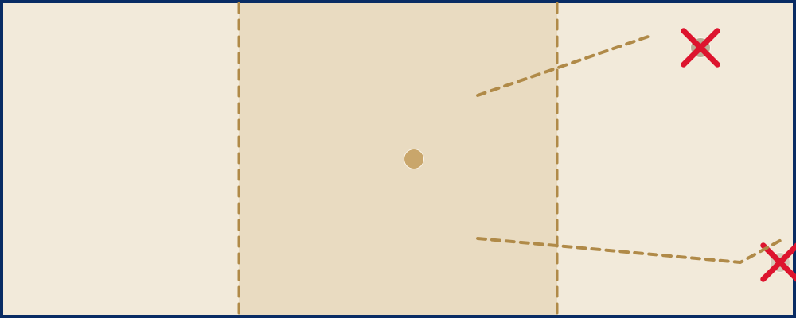

วิธีเล่นเปตอง
อัปเดต 14 กันยายน 2569 (2026)
ฉบับร่าง — การอ้างอิงมาตราของกติกายังไม่ได้ตรวจสอบ
สรุปในประโยคเดียว โยนลูกเป้าลูกเล็กออกไป แล้วแต่ละฝ่ายพยายามให้ลูกเปตองของตัวเองเข้าใกล้ลูกเป้าที่สุด จบเที่ยวหนึ่งมีฝ่ายเดียวที่ได้แต้ม และเล่นจนถึง 13 แต้ม ที่เหลืออ่านจบในเจ็ดนาที — และเล่นสักหนึ่งเกม
อุปกรณ์
ลูกเปตอง: ทำจากโลหะ เส้นผ่านศูนย์กลาง 70.5 ถึง 80 มม. หนัก 650 ถึง 800 กรัมในการแข่งขัน — ลูกสำหรับเล่นสนุกก็ใช้ได้ดีในวันหยุด ลูกเป้า (ภาษาฝรั่งเศสเรียก cochonnet): ลูกไม้หรือเรซินเล็ก ๆ ขนาดประมาณ 30 มม. และพื้นดินที่ค่อนข้างเรียบสักผืน
ผู้เล่นแต่ละคนมีสามลูกในประเภทเดี่ยวและคู่ สองลูกในประเภททีม: แต่ละฝ่ายเล่นหกลูกเสมอ art. ?
ในการแข่งขัน เล่นบนสนามที่ตีเส้นไว้ ขนาด 15 ม. × 4 ม. art. ?
เกมหนึ่งเล่นจนถึง 13 แต้ม แบ่งเป็นเที่ยวต่อเนื่องกัน — ภาษาฝรั่งเศสเรียก mène: เที่ยวหนึ่งเริ่มจากการโยนลูกเป้าจนถึงลูกสุดท้ายที่เล่น ตัวนับนับสิ่งนี้เท่านั้น — ฝ่ายไหน แล้วกี่ลูก ในแต่ละเที่ยว

การจับลูก
นี่คือสิ่งที่ทำให้ทุกคนแปลกใจครั้งแรก: มือคว่ำ ต่างจากการโยนลูกบอล ลูกเปตองอยู่ในอุ้งมือ นิ้วชิดกัน นิ้วโป้งแนบด้านข้าง ตอนปล่อยลูก ฝ่ามือหันลงพื้น และหลังมือหันขึ้นฟ้า
แขนเริ่มจากด้านหลังและเหวี่ยงจากไหล่ เหมือนลูกตุ้ม ข้อมือคลายออกเป็นอย่างสุดท้าย และนิ้ว "หุบ" ลงบนลูกขณะปล่อย: นั่นคือสิ่งที่ทำให้ลูกหมุนกลับ — ลูกหมุนถอยหลังกลางอากาศ และเบรกเมื่อแตะพื้นแทนที่จะไหลต่อ
เคล็ดลับสำหรับเกมแรก: อย่าเล็งลูกเป้า ให้เล็งจุดที่ลูกจะตกพื้น — ภาษาฝรั่งเศสเรียก donnée พื้นดินจะทำที่เหลือเอง

เท้าในวงกลม
โยนจากวงกลม: ขีดบนพื้น เส้นผ่านศูนย์กลางภายใน 35 ถึง 50 ซม. หรือวงกลมแข็งขนาด 50 ซม. วางห่างจากสิ่งกีดขวางอย่างน้อย 1 ม. art. ?
เท้าทั้งสองข้างอยู่ในวงกลมทั้งหมด แตะพื้น ไม่เหยียบเส้น — และอยู่อย่างนั้นจนกว่าลูกจะแตะพื้น art. ?
"Pieds tanqués" เท้าปักอยู่กับที่ ในภาษาโปรวองซ์: นั่นคือที่มาของคำว่าเปตอง จะย่อตัวหรือยืนวางก็ได้ตามถนัด ขอแค่เท้าไม่ขยับ

วางหรือตี
มีแค่สองท่า การวาง: วางลูกของคุณให้ใกล้ลูกเป้าที่สุด การตี: ตีลูกของฝ่ายตรงข้ามให้กระเด็นออกไป
ในประเภทคู่มักมีคนวางหนึ่งคนและคนตีหนึ่งคน ในประเภททีมมีคนวาง คนกลาง และคนตี ไม่มีอะไรบังคับ: เป็นแค่ธรรมเนียม และทุกคนเล่นลูกที่ตัวเองอยากเล่นได้
ตัดสินใจทีละลูก ถ้าวางชนะลูกที่ดีที่สุดของฝ่ายตรงข้ามได้ ก็วาง ถ้าลูกนั้นอยู่ในตำแหน่งดีเกินไป หรือขวางทาง ก็ตี คำพูดในสนาม ไม่ใช่กติกา: ไม่ตีลูกที่วางผ่านได้

วางสามแบบ
กลิ้ง — roulette: ลูกออกต่ำและกลิ้งตลอดทาง ใช้ได้เฉพาะพื้นเรียบและแน่น — ที่อื่น ก้อนหินเล็ก ๆ ก็ทำให้ลูกเบี่ยงได้
โยนครึ่งทาง — demi-portée: ลูกตกประมาณครึ่งทางแล้วกลิ้งที่เหลือ เป็นการโยนแบบใช้ประจำ
โยนสูง — portée: ลูกลอยสูงและตกใกล้ลูกเป้า แทบไม่กลิ้ง สำหรับพื้นที่มีหินหรือลาดเอียง หรือเมื่อลูกของฝ่ายตรงข้ามขวางทาง
ทั้งสามแบบ เลือกจุดตกก่อน แล้วอ่านพื้นระหว่างจุดตกกับลูกเป้า ยิ่งสูงยิ่งกลิ้งน้อยและพึ่งโชคน้อยบนพื้นไม่ดี — แต่ต้องแม่นยำที่จุดตกมากขึ้น

การตี
เล็งลูกของฝ่ายตรงข้าม — บางครั้งก็ลูกเป้า ตีในท่ายืน แขนเหยียดตรง ปล่อยลูกแรงและราบกว่าตอนวาง
คาโร (carreau): ลูกของคุณเข้าไปแทนที่ลูกที่ถูกตีออกพอดี การตีที่สมบูรณ์แบบ ตีเข้าเหล็ก (tir au fer): ลูกของคุณกระทบเป้าโดยไม่แตะพื้นก่อน การตีมาตรฐาน ตีกวาด (rafle หรือ raspaille): ลูกตกไกลข้างหน้าแล้วไถลไปตามพื้นเข้าหาเป้า อนุญาต แต่ไม่ค่อยมีใครชอบ — และพลาดทันทีที่พื้นไม่เรียบ
หลังการตี ทุกอย่างที่ขยับอยู่ตรงที่มันหยุด: นั่นคือเกม ลูกที่ออกนอกสนามทั้งลูกถือว่าตาย แม้จะกลับเข้ามา art. ?
ก่อนตี ขีดตำแหน่งของลูกเป้าและลูกเปตองไว้บนพื้นด้วยเส้นเล็ก ๆ ถ้าไม่ได้ขีด จะโต้แย้งไม่ได้ art. ?

หนึ่งเที่ยว จากลูกเป้าถึงลูกสุดท้าย
โยนเหรียญตัดสินว่าใครเริ่ม ฝ่ายนั้นขีดวงกลม โยนลูกเป้า แล้วเล่นลูกแรก art. ?
ลูกเป้าใช้ได้ถ้าหยุดห่างจากวงกลมระหว่าง 6 ถึง 10 ม. ห่างจากสิ่งกีดขวางและเส้นท้ายสนามอย่างน้อย 1 ม. art. ?
โยนได้ครั้งเดียว: ถ้าลูกเป้าใช้ไม่ได้ ฝ่ายตรงข้ามวางด้วยมือ ที่ไหนก็ได้ภายในขอบเขต — และลูกแรกยังเป็นของฝ่ายที่โยนลูกเป้า art. ?
จากนั้น ฝ่ายที่ไม่ได้ถือแต้มเป็นฝ่ายเล่นเสมอ: เล่นจนกว่าจะแย่งแต้มคืนได้ หรือลูกหมด เมื่อฝ่ายหนึ่งลูกหมด อีกฝ่ายเล่นลูกที่เหลือทั้งหมด art. ?
ทุกคนมีหนึ่งนาทีในการเล่น นับจากตอนที่ลูกก่อนหน้า — หรือลูกเป้า — หยุด หรือวัดระยะเสร็จ art. ?
เที่ยวจบเมื่อไม่มีใครเหลือลูก นับแต้ม แล้วฝ่ายที่ได้แต้มโยนลูกเป้าเที่ยวถัดไป จากวงกลมที่ขีดรอบจุดที่ลูกเป้าอยู่ art. ?

นับแต้มและวัดระยะ
จบเที่ยว มีฝ่ายเดียวที่ได้แต้ม: หนึ่งแต้มต่อหนึ่งลูกที่ใกล้ลูกเป้ากว่าลูกที่ดีที่สุดของฝ่ายตรงข้าม art. ?
นี่คือสิ่งที่ตัวนับถามพอดี ตามลำดับนั้น: ฝ่ายไหนได้แต้ม แล้วกี่ลูก เที่ยวหนึ่งมีค่า 1 ถึง 6 แต้ม ไม่มีอย่างอื่น
สงสัยแม้นิดเดียว ให้วัด — ด้วยตลับเมตรหรือวงเวียน ไม่ใช่ด้วยเท้า ฝ่ายที่เล่นลูกสุดท้ายเป็นคนวัด art. ?
ระหว่างวัด ห้ามแตะอะไร: ใครขยับลูกเป้าหรือลูกที่กำลังโต้แย้ง เสียแต้ม และไม่มีใครเก็บลูกก่อนที่ทุกคนจะยอมรับผลนับ art. ?
ถ้าลูกที่ดีที่สุดของสองฝ่ายอยู่ห่างจากลูกเป้าเท่ากัน และไม่มีใครเหลือลูก เที่ยวนั้นเป็นโมฆะ: ไม่มีใครได้แต้ม และฝ่ายที่โยนลูกเป้าเริ่มใหม่ art. ?
เกมหยุดที่ 13 ลูกที่วางเกินกว่านั้นจดในใบบันทึกได้แต่ไม่นับอะไร — ตัวนับรู้อยู่แล้ว: ปุ่มที่นำไปถึง 13 เขียนว่า "ชนะ" และไม่มีอะไรเกินกว่านั้น

เมื่อลูกเป้าตาย
ลูกเป้าตายเมื่อออกนอกสนามทั้งลูก — แม้จะกลับเข้ามา — เมื่อมองไม่เห็นจากวงกลมแล้ว หรือเมื่อถูกดันไปไกลกว่า 20 ม. หรือใกล้กว่า 3 ม. จากวงกลม art. ?
ผลขึ้นกับลูกที่เหลือ ถ้าทั้งสองฝ่ายยังมีลูก หรือไม่มีทั้งคู่ เที่ยวนั้นเป็นโมฆะ: ไม่มีใครได้แต้ม ถ้ามีฝ่ายเดียวที่ยังมีลูก ฝ่ายนั้นได้แต้มเท่ากับจำนวนลูกที่เหลือ art. ?
นี่คือความผิดพลาดในใบบันทึกที่พบบ่อยที่สุด: "ลูกเป้าออก เที่ยวโมฆะ" จริงแค่ครึ่งเดียว ตัวนับไม่เดากรณีนี้ — คุณเป็นคนใส่แต้ม หรือข้ามเที่ยว

ในสนาม
ระหว่างวงกลมกับลูกเป้า เที่ยวยังดำเนินอยู่: ไม่มีใครเดินตรงนั้น ไม่มีใครเดินตัดหน้าผู้เล่นที่กำลังโยน ฝ่ายตรงข้ามยืนด้านข้างหรือด้านหลัง ห่างกว่า 2 ม. และเงียบ art. ?
ลูกเปตองหนัก 700 กรัม และลูกที่ตีมาเร็ว เด็กและสุนัขอยู่นอกสนาม ลูกที่ยังไม่ได้เล่นเก็บให้ห่างจากวงกลม และมองก่อนข้าม
โทรศัพท์: ในการแข่งขันอย่างเป็นทางการ ห้ามใช้ระหว่างเกม — นั่นคือมาตรา 39 ของกติกา ใบแดงในข้อกำหนด ตัวนับมีไว้สำหรับเกมวันหยุด การซ้อม และทัวร์นาเมนต์กันเอง

กติกา และตัวนับ
หน้านี้เล่ากติกาด้วยภาษาง่าย ๆ ไม่ได้แทนกติกาฉบับเต็มหรือกรรมการ ข้อความที่มีผลคือ กติกาอย่างเป็นทางการของกีฬาเปตอง ของสหพันธ์นานาชาติ (FIPJP) — ฉบับภาษาฝรั่งเศสเป็นต้นฉบับ และมีฉบับภาษาอังกฤษอย่างเป็นทางการที่ fipjp.org — และในการแข่งขัน กรรมการเป็นผู้ตัดสิน การอ้างอิง "art." ด้านบนชี้ไปที่ฉบับที่เราตรวจสอบ ณ วันที่ระบุไว้ด้านบนของหน้า
และตัวนับทำสิ่งเดียวที่เหลือ: นับแต้ม สองแตะต่อเที่ยว